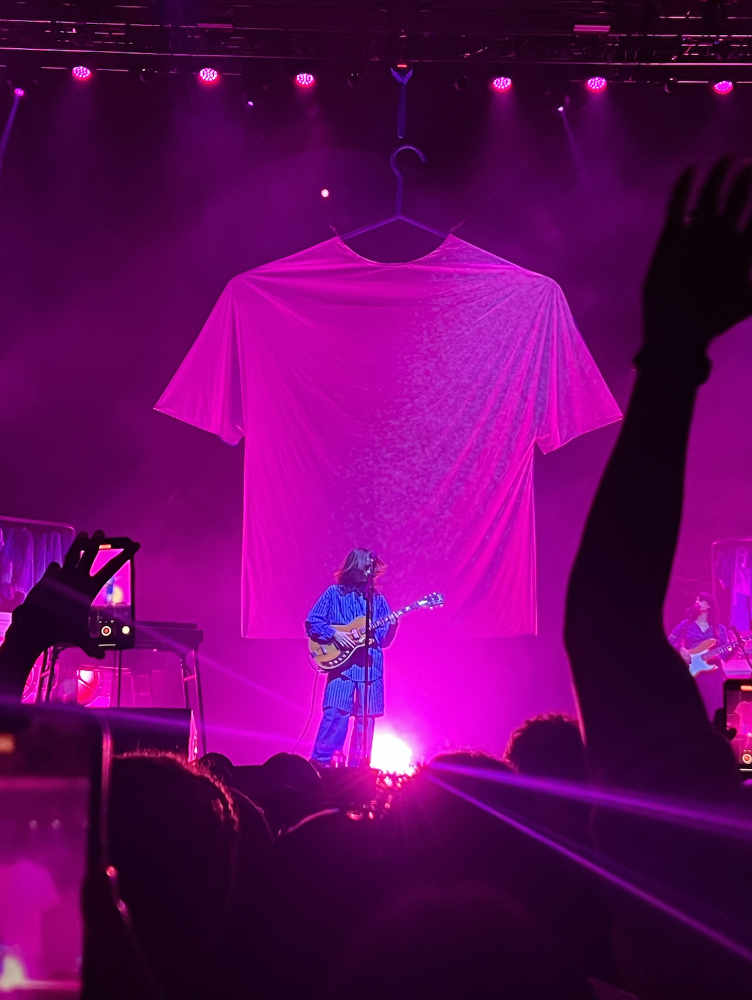

About Me!
Personal Life
Friends and Family
I grew up in Walpole, Massachusetts, a small suburban town forty minutes south of Boston. My immediate family consists of myself, my two brothers, and my parents, but I was fortunate enough to live close to my grandparents, aunts and uncles, and cousins.
{kind=link}
{kind=link}
Along with my Family, I have a a wonderful group of friends in Santa Barbara and Walpole. Some of which I have known since middle school to some that I met this year.
{kind=link}

Hobbies
Outside of time with friends and family, you can find me at any live music event. Whether it be a small band show in Isla Vista or a stadium event, concerts help me relax and unwind.
{kind=link}
{kind=link}

Additionally, I also discovered a love for travelling after studying abroad in Copenhagen. I was fortunate enought to visit countries ranging from Germany, Italy, Spain, Sweden, and Czechia. I made great friends and memories along the way, and I hope I can travel again soon to make even more memories.{kind=link}
{kind=link}
{kind=link}

Professional Life
Education
I currently am attending the University of California, Santa Barbara. I am pursing a Bachelor of Science in Environmental Studies with a concentration in Physical Geography. I have taken courses ranging from introductory sciences series like chemistry and physics to more defined upper division courses focused on renewable energy systems and GIS applications within the environmental field.
Career Opportunites and Goals
I currently am interning at the Santa Barbara County Association of Governments, aiding with technical GIS applications for our counties transportation routes and systems. My tasks range from constructing maps depictining demographics and transportations across Santa Barbara County, building web based applications used as guidance for county supervisor’s decisions, and conducting GIS governance for the organization’s data hub. It has been an amazing opprotunity to expand my familairty with Esri Suite and learn more about the intricasies associated transportation planning on a county wide level.
Additionally, I am a Sustainability Support Staff Lead at the Isla Vista Community Service District. I mainly support the districts compost opperations, doing hands on tasks like building piles and servicing drop off bins but I also schedule and conduct volunteer opportunites, oversee community outreach by tabling at certain events, and create operational material guides for future employees.
I also work for Associated Students Recycling on UCSB campus as a Route Rider. In this position, I help faciliate on campus recycling to meet UCSB’s sustainiablity goals. While it might not be the most glamorous job, I have loved connecting with fellow UCSB students over a shared passion of enhancing the universities commitment to environmental stewardship.
Finally, while not a paid position, I currently am acting as the Development Manager for Sprout Up UCSB. Sprout Up aims to provide free environmental science education to Title I elementary schools across the nation. We hope to foster not only a love for the environment but science in general by providing novel lessons and experiments that these schools might not have access to. As the Development Manager, I organize and oversee fundraising events like raffle baskets, resteraunt collaborations, and our annual 5k.
Current Obsessions
This is a small section to share an ever updating list of my current obsessions.
Last Updated: 2026-05-31
Current Favorite Songs
- Olivia Rodrigo: The Cure
- Say Now: Millions-Unplugged
- Untouched: The Veronicas
Movies I’m Excited For
- Backrooms, Directed by Kane Parsons
- Stop that Train, Directed by Adam Shankman
- The Hunger Games Sunrise On the Reaping, Directed by Francis Lawrence
Trader Joe’s Finds
- Brookie Caramel Candy Clusters
- Italian-Style Wedding Soup
- Frozen Kimbap